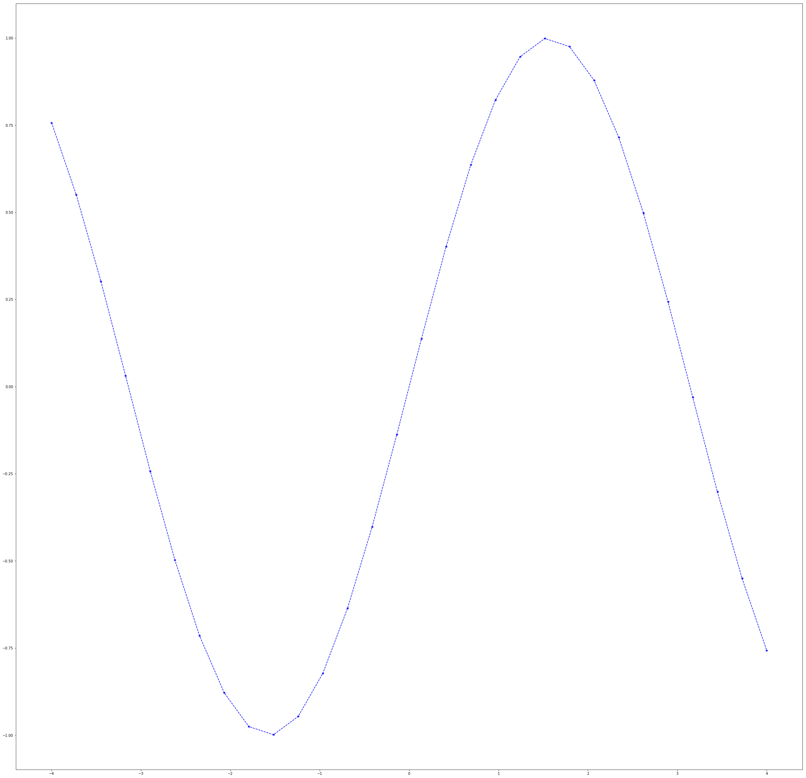

1. 保存图片
保存图片可以使用matplotlib.pyplot.savefig来实现
from matplotlib import pyplot as plt
import numpy as np
%matplotlib inline
fig = plt.figure(figsize=(40,40))
x=np.linspace(-4,4,30)
y=np.sin(x)
plt.plot(x,y,'--*b')
fig.savefig("./source/sin_ex.png", dpi=15)
